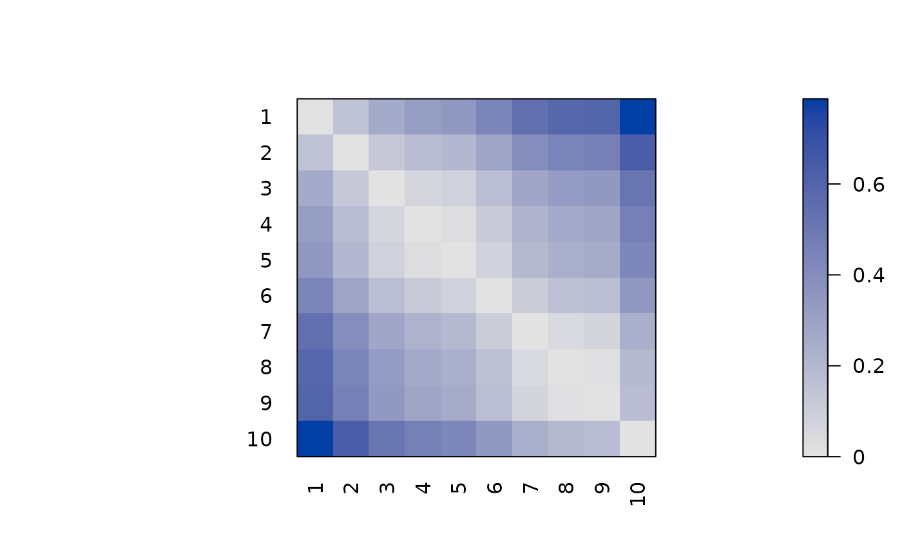
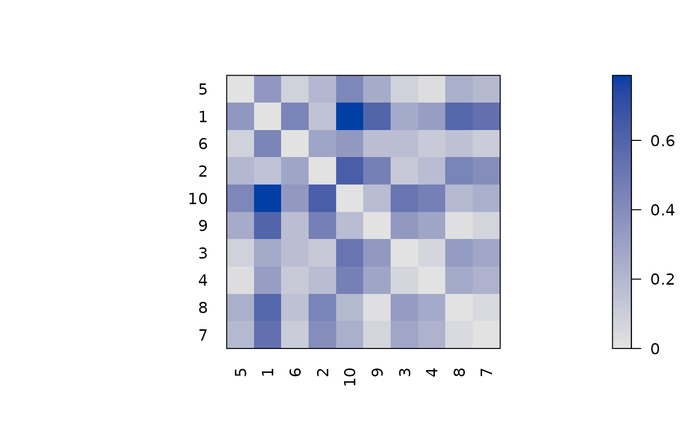
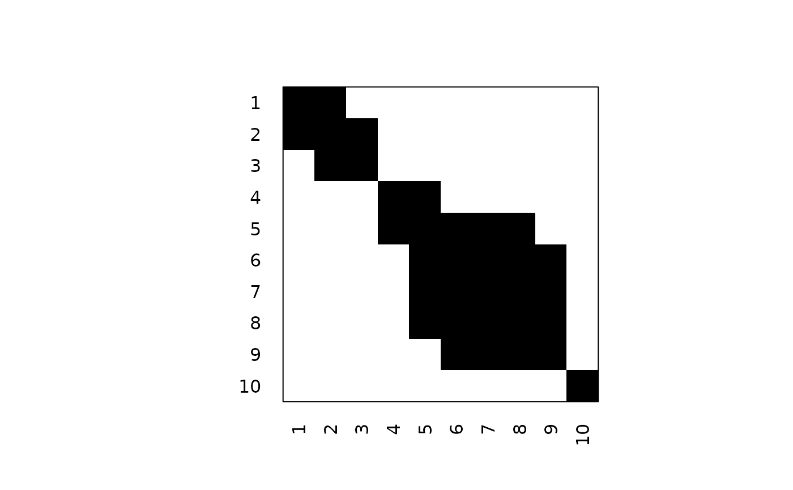
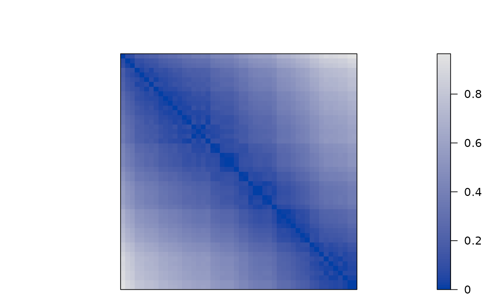
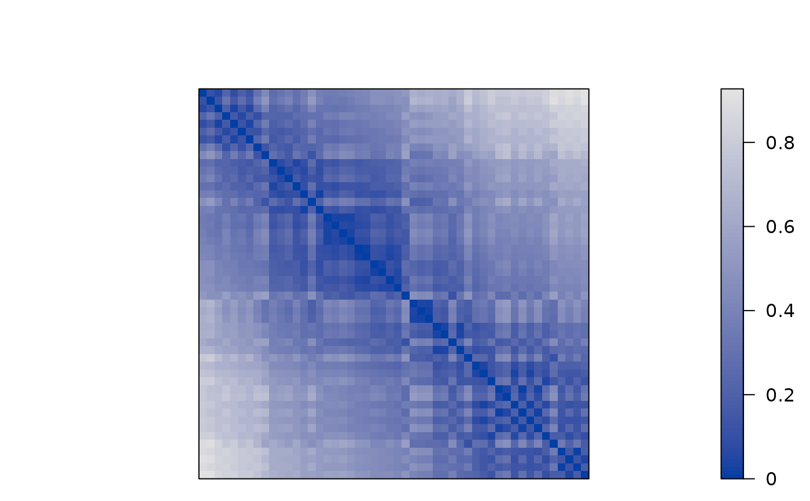

Provides functions to create and recognize (anti) Robinson and pre-Robinson matrices. A (anti) Robinson matrix has strictly decreasing (increasing) values when moving away from the main diagonal. A pre-Robinson matrix is a matrix which can be transformed into a perfect Robinson matrix using simultaneous permutations of rows and columns.
Usage
is.robinson(x, anti = TRUE, pre = FALSE)
random.robinson(n, anti = TRUE, pre = FALSE, noise = 0)Arguments
- x
a symmetric, positive matrix or a dissimilarity matrix (a
distobject).- anti
logical; check for anti Robinson structure? Note that for distances, anti Robinson structure is appropriate.
- pre
logical; recognize/create pre-Robinson matrices.
- n
number of objects.
- noise
noise intensity between 0 and 1. Zero means no noise. Noise more than zero results in non-Robinson matrices.
Details
Note that the default matrices are anti Robinson matrices. This is done because distance matrices (the default in R) are typically anti Robinson matrices with values increasing when moving away from the diagonal.
Robinson matrices are recognized using the fact that they have zero anti Robinson events. For pre-Robinson matrices we use spectral seriation first since spectral seriation is guaranteed to perfectly reorder pre-Robinson matrices (see Laurent and Seminaroti, 2015).
Random pre-Robinson matrices are generated by reversing the process of
unidimensional scaling. We randomly (uniform distribution with range
\([0,1]\)) choose \(x\) coordinates for n points on a straight
line and calculate the pairwise distances. For Robinson matrices, the points
are sorted first according to \(x\). For noise, \(y\) coordinates is
added. The coordinates are chosen uniformly between 0 and noise, with
noise between 0 and 1.
References
M. Laurent, M. Seminaroti (2015): The quadratic assignment problem is easy for Robinsonian matrices with Toeplitz structure, Operations Research Letters 43(1), 103–109.
See also
Other data:
Chameleon,
Irish,
Munsingen,
Psych24,
SupremeCourt,
Townships,
Wood,
Zoo,
create_lines_data()
Examples
## create a perfect anti Robinson structure
m <- random.robinson(10)
pimage(m)

is.robinson(m)
#> [1] TRUE
## permute the structure to make it not Robinsonian. However,
## it is still pre-Robinson.
o <- sample(10)
m2 <- permute(m, ser_permutation(o,o))
pimage(m2)

is.robinson(m2)
#> [1] FALSE
is.robinson(m2, pre = TRUE)
#> [1] TRUE
## create a binary random Robinson matrix (not anti Robinson)
m3 <- random.robinson(10, anti = FALSE) > .7
pimage(m3)

is.robinson(m3, anti = FALSE)
#> [1] TRUE
## create matrices with noise (as distance matrices)
m4 <- as.dist(random.robinson(50, pre = FALSE, noise = .1))
pimage(m4)

criterion(m4, method = "AR")
#> AR_events
#> 409
m5 <- as.dist(random.robinson(50, pre = FALSE, noise = .5))
pimage(m5)

criterion(m5, method = "AR")
#> AR_events
#> 4248